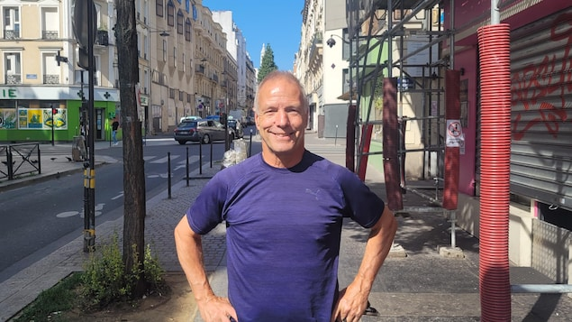
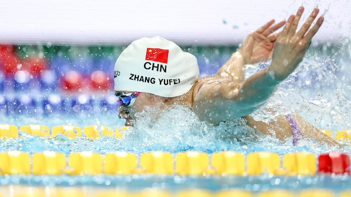
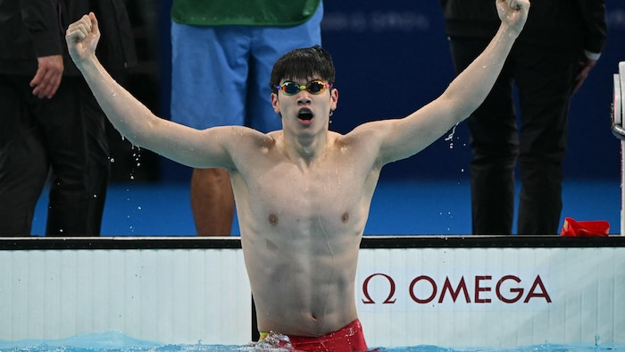
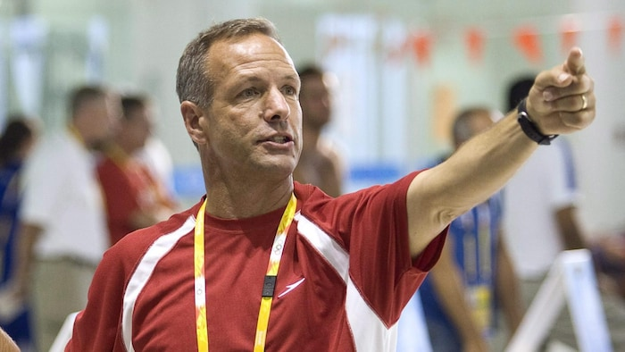

中国游泳队总教练拉方丹（Pierre Lafontaine）。
照片：Radio-Canada / Robert Frosi
RCI
中国游泳队在今届奥运中，备受之前的禁药问题困扰。他们的总教练，是来自魁北克的拉方丹（Pierre Lafontaine）。
拉方丹是国际泳界有名教练，曾主教加拿大和澳大利亚泳队。我和他在蒙马特圣心大教堂脚下一个小区见面，他非常平易近人。
只是在访问进行前，拉方丹事先说明说：我不能和你谈兴奋剂问题。
这句话或许是源自他事先与中国达成的协议。但他也不打算回避一切提问。
文化冲击
尽管拥有丰富国际经验，但执掌中国队并非易事。
我在游泳馆有一个翻译。早上出发前，我会学几句普通话，写在笔记本上。到泳池后，就和运动员一起做一些简单的事情，并用普通话把这些事情写在黑板上。
每天我会用五或十点说明简单的事情，比如’鼓励队友’，或是’每天把手机拿开15分钟，这都是你可以睡觉的时间’。这些都是为了培养自信。听来简单，但如果输羸就在百分之一秒，那总得从微小做起，
他说。

张雨霏在上届东京奥运中获得两金两银，今届比赛在女子200米蝶泳获铜牌。
照片：Getty Images / David Balogh
拉方丹花了不少时间，讲述中国泳队顽固的只许成功
文化和当中的难处。
之后，我们终于触及敏禁的禁药风波话题。
23名中国游泳运动员的禁药检测呈阳性，已成为体育界一桩丑闻。
泳队成员不能在外面吃东西，以免受污染
停顿好一会沉思后，拉方丹终于开口。
中国泳队过去两年发生了变化，有了新的管理机构和新的总干事。我以前也见过加拿大和澳大利亚的管理组织，但这还是首次看到一个国家对运动员的监督达到这种程度。泳队成员不能在外面吃东西，以免受污染。他们对食品的规定，与加拿大食品局不同。一切都要在培训中心进行，我们都在那里开会。
对我来说，最困难的事情就是确保运动员’干净’。
他又说，监督措施也适用于教练，他们同样必须证明自己清白。
拉方丹说，他的运动员接受的检测最多。23名游泳运动员的情况，我不能发表评论，因为我当时不在场。但我可以告诉你们，新的改革十分严谨。奥运前在多维尔（Deauville）训练营训练时，有些运动员在两周内接受了九次检测，其中一名运动员，更在一天内接受了三次检测。
潘展乐破世界纪录受质疑
中国泳手潘展乐上周在奥运会上以40分之1秒的成绩，打破自己保持的100米自由泳世界纪录，又带领中国接力队夺得冠军，纪录受到不少质疑。澳洲教练霍克（Brett Hawke）表示，潘展乐的纪录在人类看来是不可能的。我是这方面的专家，我研究过这项运动和速度…这是不可能的。

潘展乐的破纪录超人表现，引起泳界质疑。
照片：Getty Images / Jonathan Nackstrand / AFP
拉方丹坦率地回答，或许无人可以保证他从来不曾服用过禁药。但我不会相信，因为我见过他的实力。
拉方丹又说，从外部对他人指指点点很容易，但当你指着他人时，也会有另外三根手指指着你
。

拉方丹（Pierre Lafontaine）是国际泳界有名教练，曾主教加拿大和澳大利亚泳队。
照片：The Canadian Press / Paul Chiasson
拉方丹又说，没有人谈论其他在本届奥运会上打破纪录的运动员。有个女孩，将自己的最好成绩提高了十分之七秒，获得了第二名，但没有人谈起她。还有其他几位泳手的世界纪录。
对于中国选手既有人破纪录，也有成绩一般的反常表现，拉方丹说，奥运与世锦赛或泛美运动会不同，奥运总会有另一番景象。有些运动员懂得管理情绪，有些则不然。大起大落发生在每个人身上，也发生在年轻的中国人身上。
拉方丹与中国的合约，将于年底到期，未来他希望能帮助其他国家，想把自己在池边五十年的经验传授给别人。
采访结束后，我在街上遇到一个观看完羽毛球和游泳比赛的中国家庭。小女孩和她的母亲用近乎流利的法语告诉我，他们为中国运动员感到骄傲。
当我问她们对中国游手涉嫌使用禁药有何看法时，她们变得支支吾吾，似乎不明白我的问题。
幸好拉方丹愿意受访。
Robert Frosi de Radio-Canada, adaptation en chinois par Donna Chan.
文章来源于RCI:中国游泳队总教练谈禁药问题